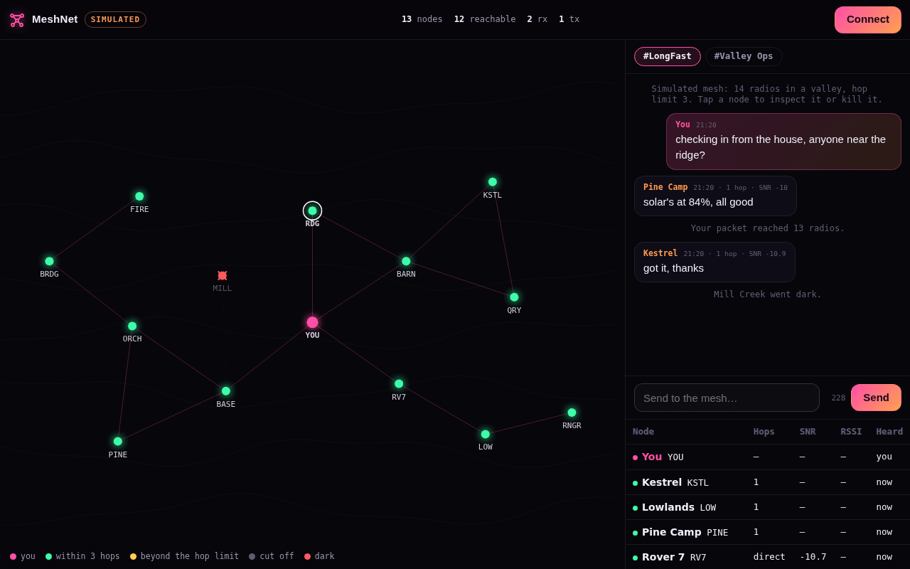

Plug in a real radio
Meshtastic over Bluetooth or USB, and MeshCore (beta), using the same driver as NULLSPACE. Your node reports the mesh it knows.
Every radio is a relay. A packet floods outward, gets rebroadcast by whoever hears it, and dies at a hop limit instead of at a routing table. Kill any node and the traffic takes a longer road.
Runs in the browser · plug in a radio, or try the simulated valley

A Meshtastic mesh has no router and no tower. Each radio rebroadcasts what it hears once, and a packet keeps spreading until its hop limit runs out. Hop count is the whole cost model: there's only a few hundred bits per second, so everything is built around text, position and telemetry.
MeshNet started as a Python and Flask dashboard over an MQTT bridge. The live console below goes further: it talks to the radio straight from the browser, over Bluetooth or a USB cable, with no server in the path at all.
Meshtastic over Bluetooth or USB, and MeshCore (beta), using the same driver as NULLSPACE. Your node reports the mesh it knows.
Nodes on a map when they share positions, otherwise in rings by how many hops away they are, with every packet flashing in as it arrives.
Read and send on every channel your radio has, with hop count and signal-to-noise on each message and a byte counter for the 228-byte packet limit.
No radio? Fourteen simulated nodes flood packets the way Meshtastic does. Kill relays and watch the route get longer until there isn't one.
Nodes that existed but would not appear. The handhelds showed a healthy mesh; the web dashboard showed nothing. Two faults stacked in the MQTT path: the subscription never included msh/US/2/json/e/#, and packets that did arrive were unwrapped wrongly and dropped.
When the radios and the dashboard disagree, the radios are right. Debug the bridge, not the mesh.
The original: Python, Flask, the Meshtastic library and an MQTT bridge, launched with a uv-managed install. The console here: Web Bluetooth, Web Serial and Meshtastic protobufs written from scratch.
LoRa reaches a few miles per hop, further with height, for about $30 a node with no licence. It's the short-range sibling of NovarAC's HF radio. Radio support in the browser follows the published protocols but hasn't been tested on real hardware yet. iPhone browsers can't reach radios, so the simulator is the way in there.
Nothing in the path may require the internet to be up. MQTT is a convenience, never a dependency.
more in signals & commskeep scrolling · it opens right here